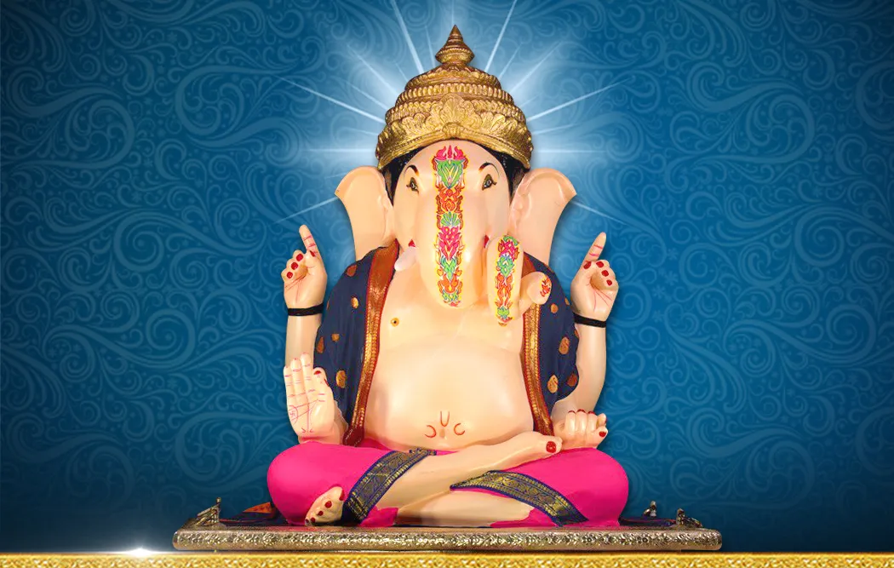
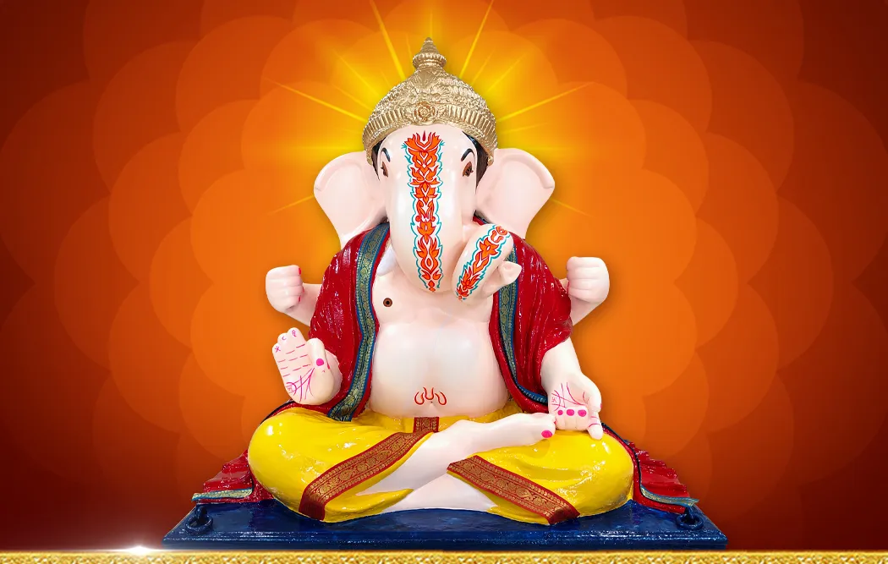
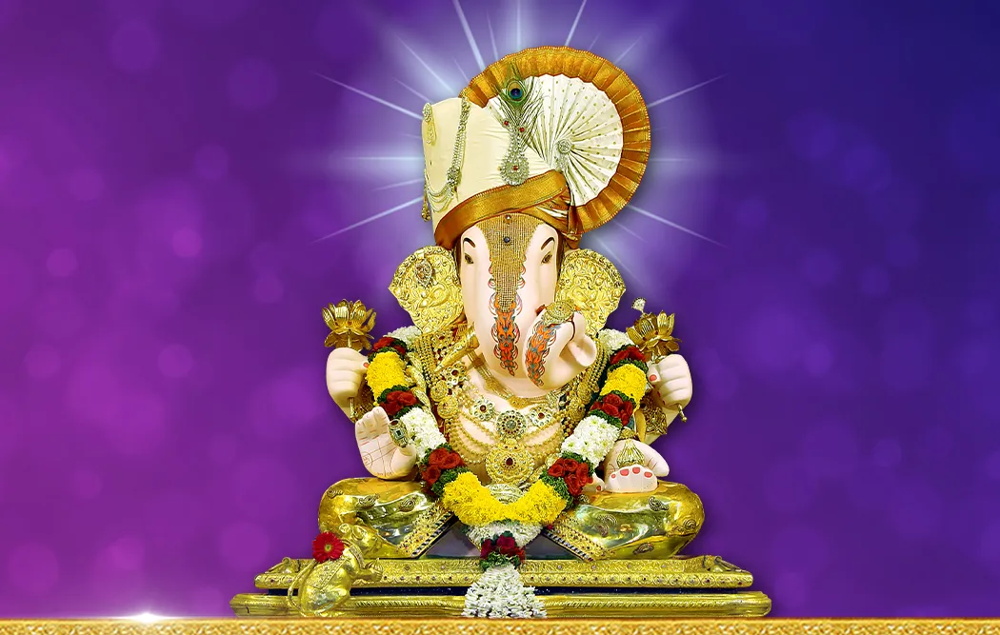

1893 - The Beginning:
Eco-friendly Idol
Nanasaheb Priviwale of Pune witnessed the Ganpati festival in Valher,
inspiring him to unite society for freedom. He introduced the concept in
Pune, initially met with resistance due to the city's conservative
reputation. Lokamanya Tilak convened a meeting, inviting Dagdusheth
Halwai, the Nagarsheth of Pune, and Mayavars. They decided to celebrate
the seven-day Ganpati festival at five city locations, with locals
funding it. The response was so positive that Lokamanya Tilak urged the
public to join, leading to a ten-day celebration in 1893. Dagdusheth
Halwai introduced an environmentally-friendly idol, differing from
traditional warrior Ganesha forms. This concept aimed to bless and
protect society. Shri Naik crafted this idol, which became the symbol of
the Dagdusheth Halwai Ganpati Trust's Ganesh Utsav.
Statue of 1896
In 1896, a plague hit Pune. Dagdusheth Halwai's son's absence saddened
him. After his son's death, Dagdusheth passed away within a few months,
leaving his wife and wealth. To address this, their spiritual guru, Shri
Madhavnath Maharaj, advised building the Shri Datta Temple in
Dagdusheth's name. Dagdusheth's wife, following the guru's guidance,
decided to construct the Datta Mandir and had a second Lord Ganesha idol
crafted by sculptor Shri Naik. In 1897, the young people were given this
idol to start celebrating the Ganpati Utsav. In 1952, businessmen and
youths, including Tatyasaheb Godse and his colleagues Dattoba Chavan,
Mamasaheb Rasane, Laxmanrao Jamdade, Gajanan Kedari, Navrtirao Raikar,
Balkrishna Jamdade, Shankarao Suryavanshi and Kashinathrao Rasane, took
over the festival until 1967. They collected donations and celebrated
the Amrit Mahotsav. In 75 years, the idol's arm broke, leading to
discussions about replacing it. The broken idol was meticulously
repaired and now resides in Ganesh Mandir and Raman in Kondhwa Child
Care Center of the Trust.


1968 Ladiwal Murti (Idol)
In 1968, discussions began about making a new
Ganesha idol after the Amrit Mahotsav. Dr. Balasaheb Paranjpe suggested
Nagesh Shalp, who was skilled in clay sculpture. After obtaining a photo
of the old idol, Shankarappa Salpi, known for his Carnatic-style
artistry, was tasked with creating a one-meter-tall clay idol. This
initial idol was presented to traders in Ali for approval. Following
their endorsement, Shankarappa was commissioned to make a larger
version. Shankarappa suggested incorporating a Ganesha Yantra in the
idol's belly, in alignment with traditional practices. He performed
religious rituals and placed the Yantra on the idol during a solar
eclipse at the Mula Mutha river confluence in Pune. This Yantra ritual
was maintained for twelve months. On August 27, 1968, the idol was
consecrated in a dignified and scientific manner. Since then, it has
adhered to Hindu customs without deviation. This marked the beginning of
a new era, as it's uncommon to create clay idols in temples in India. In
1984, the first Lord Ganesha temple was built near Budhwar Peth.
Subsequently, in 2005, a grand temple was established in the same
neighbourhood.